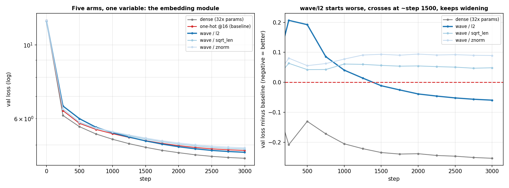
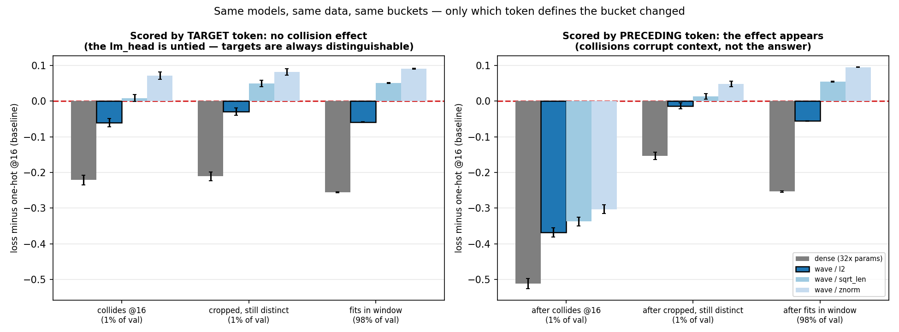
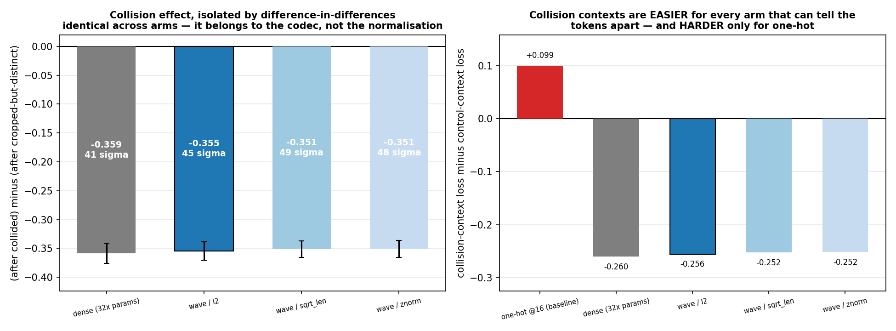

Kronecker embeddings read only a token's first pos_dim bytes. Where a vocabulary violates that limit, distinct words receive identical vectors permanently — no amount of training separates them. This project measures the damage on the real 131,072-token vocabulary and replaces the fixed grid with a phase-bound Fourier code that has no position ceiling, at identical parameter count.
Problem 4 asks for a Fourier alternative — represent each character as a wave and add them to make a word. Taken literally it fails on the first example: addition is commutative, so dog and god produce the identical vector, and so does every anagram. Order has to enter through something other than the sum, and the natural choice is to rotate each character's wave by its position. Rotation has no ceiling — position 47 is just "rotate 47 times as far."
UTF-8 charges different scripts different rates, so a window that is generous in one language is cramped in another — and nothing in the embedding's parameter count reveals it.
क्ष looks like one character. Unicode stores it as three codepoints — क + halant + ष — at 3 bytes each. Nine bytes for one visual symbol.
| pos_dim | groups | tokens merged | % vocab |
|---|---|---|---|
| 12 | 1,877 | 5,335 | 4.070% |
| 16 | 380 | 903 | 0.689% |
| 20 | 131 | 303 | 0.231% |
| 24 | 39 | 93 | 0.071% |
| 32 | 0 | 0 | 0.000% |
Zero at 32 is not a null result. The tokenizer's own audit reports tokens > 32 bytes: 0 — the vocabulary was built to satisfy the window. The constraint didn't vanish; it was paid for upstream, as a restriction on which merges the tokenizer may learn.
The highlighted row is the setting the reference paper's own 124M experiments use. There, it is violated.
Latin loses 18 of 108,185 tokens. Malayalam loses 10.1% of its own. Two orders of magnitude, from one shared constant.
Gradient moves A's row and leaves B's alone. They separate because they own different parameters.
There is no per-token parameter. One shared matrix receives the same input vector from both. Whatever it does to one, it does to the other.
Two codes computed live in your browser from the same random phasors — one summing byte waves directly, one rotating each by its position first.
6-layer model, 98M training tokens (~50% English, ~50% Hindi), identical tokenizer, body, schedule and batch order. All five arms report body_state_hash = 4a6392274148 — every parameter outside the embedding initialised bit-identically. The control is verified, not assumed.
| arm | final val loss | vs baseline | embedding params |
|---|---|---|---|
| dense table (reference, not matched) | 4.5592 | −5.27% | 50,331,648 |
| wave / l2 | 4.7532 | −1.24% | 1,572,864 |
| one-hot @16 (baseline) | 4.8129 | — | 1,572,864 |
| wave / sqrt_len | 4.8612 | +1.00% | 1,572,864 |
| wave / znorm | 4.9023 | +1.86% | 1,572,864 |

Bucketing by the target token showed no collision effect at all. That contradiction located an error in the measurement: the output matrix is untied and dense, so every token keeps a private output row and stays perfectly scoreable as an answer. A collision corrupts a token as context — so what degrades is the prediction of whatever comes next.


| after collided | after control | ||
|---|---|---|---|
| dense | 3.3531 | 3.6130 | −0.260 easier |
| wave / l2 | 3.4973 | 3.7528 | −0.256 easier |
| one-hot | 3.8652 | 3.7662 | +0.099 harder |
Collided tokens are common words, so what follows them is predictable. Every model that can tell them apart finds those positions easier. One-hot alone finds them harder.
By 4.08% — using 32× the embedding parameters (50.3M vs 1.57M). The honest trade is a 32× parameter reduction for about 4% of loss. Not "our embedding beats a dense table." It does not, here.
Collision-affected positions are 1% of the stream, so the 0.355-nat effect explains only 6.3% of the aggregate gain. Under-claiming the aggregate is what makes the mechanism claim credible.
One model size, one token budget, one seed per arm, one language pair, one metric. Nothing here transfers to frontier scale by assertion.
Validation loss on in-distribution text is the axis most favourable to a dense table. Typo robustness, unseen-token handling and vocabulary-independent cost are invisible to it and untested here.
pip install -e . && pytest -q # 16 contract tests # layer 1 — no GPU, ~2 minutes python experiments/m1_collision_audit.py --byte-source both python experiments/m1_separation_demo.py # layer 2 — ~5 GPU-hours on one RTX 3060 python experiments/m2_build_tables.py python experiments/m2_prepare_data.py --hf --tokens 100_000_000 for a in onehot wave_sqrtlen wave_l2 wave_znorm dense; do python experiments/m2_tiny_train.py --config configs/m2_$a.yaml done # layer 3 — no training; first call scores and caches, the rest are instant python experiments/m2_bucket_analysis.py --bucket-by prev-collision python experiments/m2_figures.py # regenerates every figure
no hand-edited figuresparameter parity is a testevery run writes a manifest